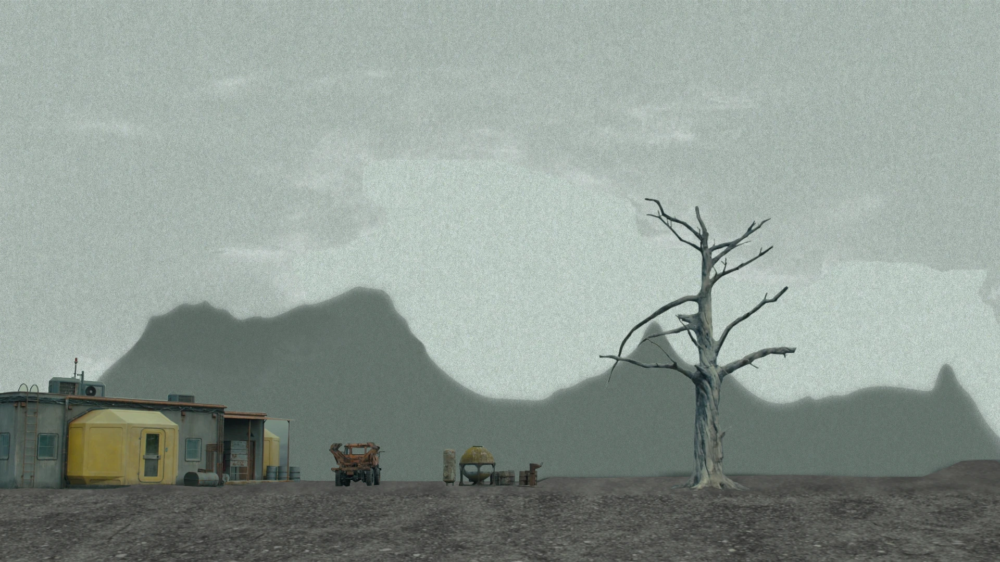
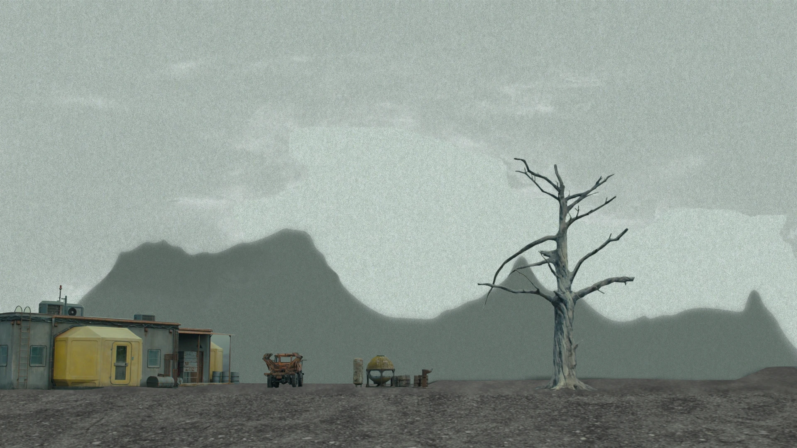
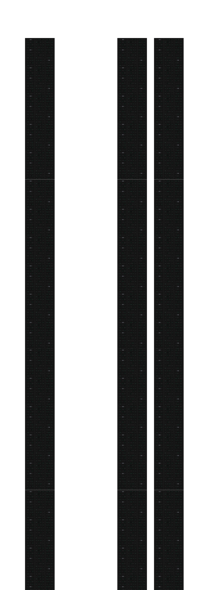
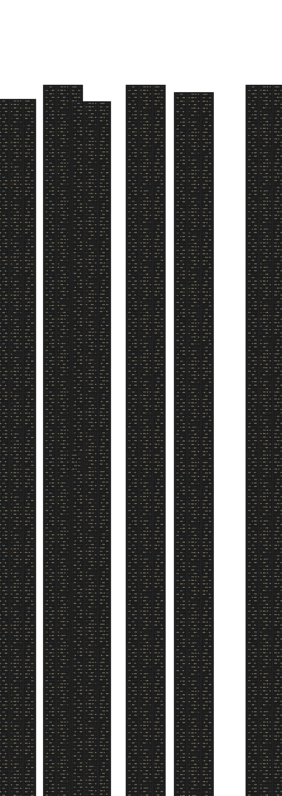
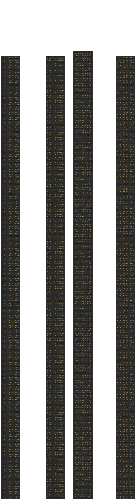
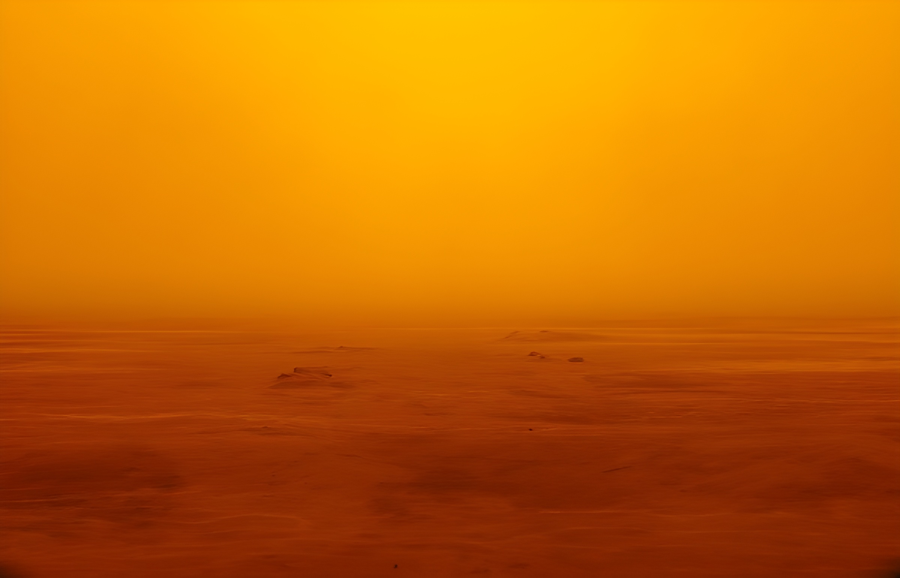
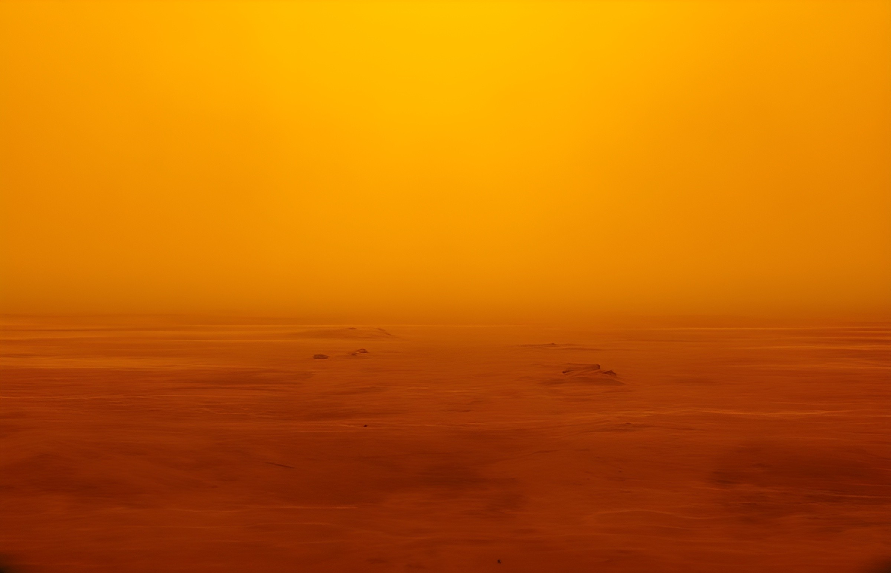

Blade Runner 2049
Trabalho Realizado por Diogo Nunes e António Simões no ambito da cadeira de Comunicação Multimédia para a o curso de Design Multimédia da Univesidade de Coimbra.
A tarefa de K envolve a procura e a extreminação de replicantes ilegais, o que o levou à zona rural da Califórnia, muito para além dos limites da cidade de Los Angeles, onde o replicante Sapper Morton vivia como um recluso agricultor de proteínas.
Este é o apartamente de K. é aqui que ficamos a conhecer mais sobre a sua vida amorosa com a sua companheira digital Joi e sobre os seus conflitos enternos de solidão e de existência como um replicante caçador de outros replicantes.
Após uma conversa carregada de subentendidos, onde Sapper demonstra calma e sabedoria, K revela que está ali para “aposentá-lo”. A luta começa de forma abrupta e brutal dentro da casa. K vence o confronto, "reformando" Sapper. Apos a luta, K encontra uma caixa enterrada com restos humanos, dando inicio a trama pricipal do filme.